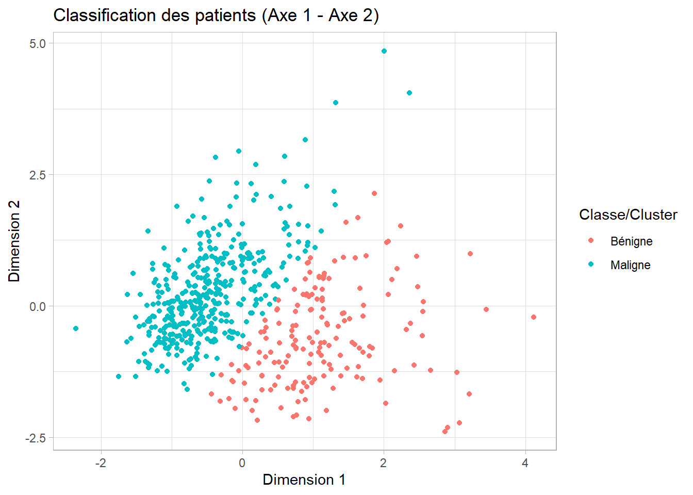

import pandas as pd
import numpy as np
import matplotlib.pyplot as plt
import seaborn as snsOptimisation de la classification médicale par intégration de techniques statistiques et machine learning
Résumé / Abstract
Cette étude présente une approche méthodologique combinant analyse en composantes principales (ACP), sélection de variables, et modélisation par k plus proches voisins (KNN) ainsi que régression logistique pour la classification de données médicales. L’objectif principal était d’identifier les variables les plus discriminantes et d’évaluer la performance prédictive des modèles. Les résultats montrent que la réduction de dimension facilite l’interprétation, tandis que les deux modèles de classification offrent des performances satisfaisantes, avec un bon compromis entre précision et interprétabilité. Cette méthode robuste peut être étendue à d’autres jeux de données similaires.
Ce projet est un exercice personnel visant à mettre en pratique les notions acquises.
Mots-clés : Analyse en composantes principales, Sélection de variables, K plus proches voisins, Régression logistique, Classification, Données médicales.
This study presents a methodological approach combining principal component analysis (PCA), variable selection, k-nearest neighbours (KNN) modelling and logistic regression for the classification of medical data. The main objective was to identify the most discriminating variables and to assess the predictive performance of the models. The results show that dimension reduction facilitates interpretation, while both classification models offer satisfactory performance, with a good compromise between accuracy and interpretability. This robust method can be extended to other similar datasets.
This project is a personal exercise to practice the concepts I have acquired.
Keywords: Principal component analysis, Variable selection, K-nearest neighbours, Logistic regression, Classification, Medical data.
Méthodologie
1. Analyse en Composantes Principales (ACP)
L’ACP est une méthode de réduction de dimensionnalité qui permet de résumer l’information de nombreuses variables corrélées en un nombre réduit de composantes non corrélées (axes principaux).
Cela facilite la visualisation, l’interprétation et évite la redondance dans les modèles prédictifs.
2. Clustering KMeans
Une méthode non supervisée pour regrouper les observations en groupes homogènes selon leurs caractéristiques principales (issues de l’ACP).
Cela permet d’identifier des profils ou clusters naturels dans les données sans utiliser la variable cible.
Pourquoi utiliser les KMeans avant de specifier les modèles de Machine Learning ?
Le clustering KMeans, en segmentant la population en groupes homogènes, permet de :
identifier des sous-groupes latents aux caractéristiques distinctes qui peuvent influencer la relation entre variables explicatives et cible ;
détecter des structures ou hétérogénéités non visibles dans l’analyse globale ;
améliorer la modélisation en ajustant éventuellement des modèles spécifiques par cluster ou en utilisant les clusters comme variables explicatives supplémentaires ;
vérifier l’homogénéité au sein des groupes, ce qui peut renforcer la validité des modèles
3. Modèles prédictifs supervisés (régression logistique et K-NN)
Après réduction de dimension et/ou clustering, on construit des modèles supervisés pour prédire la classe (maligne ou bénigne).
Régression logistique : Modèle probabiliste classique adapté aux classifications binaires;
K plus proches voisins (K-NN) : Méthode basée sur la proximité dans l’espace des variables, simple mais performante;
On compare les performances des modèles sur un jeu de test afin d’évaluer leur précision et leur capacité à généraliser.
L’ACP est faite en amont pour éviter la multicolinéarité et améliorer la robustesse des modèles.
Le clustering permet de découvrir la structure latente des données avant la classification.
Exploration des données
L’exploration des données comprend :
- Le résumé statistique descriptif des variables
- La distribution de la variable cible
- L’étude des corrélations entre variables
Ces étapes permettent de mieux comprendre la structure et les caractéristiques de la base avant modélisation.
Description des variables
Les variables de cette base sont construites à partir de l’analyse de noyaux de cellules détectés dans des images médicales.
id(int) : Identifiant unique de l’observation (patient).diagnosis(catégorielle) Variable cible binaire :M : Malignant (maligne)
B : Benign (bénigne)
Caractéristiques mesurées
Pour chaque noyau de cellule, 10 mesures statistiques ont été calculées, puis la moyenne, l’écart-type (erreur standard, noté se), et la valeur extrême (worst) ont été rapportés :
Mesures de base :
Ces mesures sont disponibles en 3 versions chacune : .mean, .se, .worst
| Variable de base | Signification |
|---|---|
radius |
Rayon moyen du noyau |
texture |
Écart-type des valeurs de niveaux de gris |
perimeter |
Périmètre du noyau |
area |
Surface du noyau |
smoothness |
Régularité des contours (valeurs faibles = plus lisses) |
compactness |
Compacité = (périmètre² / surface) - 1.0 |
concavity |
Gravité des concavités dans les contours |
concave points |
Nombre de points concaves sur les contours |
symmetry |
Symétrie de la cellule |
fractal dimension |
Mesure de la “rugosité” des contours |
Chaque mesure est donc déclinée en :
*_mean*_se*_worst
Par exemple :
radius_mean,radius_se,radius_worsttexture_mean,texture_se,texture_worst…
fractal_dimension_mean,fractal_dimension_se,fractal_dimension_worst
Ce qui donne au total 30 variables quantitatives.
Résumé des types de variables
| Type de variable | Nom | Nombre |
|---|---|---|
| Identifiant | id |
1 |
| Cible binaire | diagnosis |
1 |
| Variables numériques (×10 mesures ×3 stats) | *_mean, *_se, *_worst |
30 |
Remarques
- On se focalisera uniquement sur les moyennes
- Aucune valeur manquante n’est présente dans le jeu de données.
- Les variables sont toutes numériques à l’exception de
diagnosis. - Un prétraitement est souvent nécessaire (standardisation, sélection de variables, etc.) avant d’entraîner un modèle.
Analyse de données
Analyse exploratoire
- Quelques statistiques descriptives
df = pd.read_csv('data.csv')
df.head() id diagnosis ... fractal_dimension_worst Unnamed: 32
0 842302 M ... 0.11890 NaN
1 842517 M ... 0.08902 NaN
2 84300903 M ... 0.08758 NaN
3 84348301 M ... 0.17300 NaN
4 84358402 M ... 0.07678 NaN
[5 rows x 33 columns]print('\n')df = df.loc[:, (df.columns.str.contains('mean')) | (df.columns == 'diagnosis')]
df.info()<class 'pandas.core.frame.DataFrame'>
RangeIndex: 569 entries, 0 to 568
Data columns (total 11 columns):
# Column Non-Null Count Dtype
--- ------ -------------- -----
0 diagnosis 569 non-null object
1 radius_mean 569 non-null float64
2 texture_mean 569 non-null float64
3 perimeter_mean 569 non-null float64
4 area_mean 569 non-null float64
5 smoothness_mean 569 non-null float64
6 compactness_mean 569 non-null float64
7 concavity_mean 569 non-null float64
8 concave points_mean 569 non-null float64
9 symmetry_mean 569 non-null float64
10 fractal_dimension_mean 569 non-null float64
dtypes: float64(10), object(1)
memory usage: 49.0+ KBdf.isna().sum()diagnosis 0
radius_mean 0
texture_mean 0
perimeter_mean 0
area_mean 0
smoothness_mean 0
compactness_mean 0
concavity_mean 0
concave points_mean 0
symmetry_mean 0
fractal_dimension_mean 0
dtype: int64print('\n')# on saute la première colonne (id) et la derniere columns (unnamed)
df.iloc[:, 1:df.shape[1]].describe() radius_mean texture_mean ... symmetry_mean fractal_dimension_mean
count 569.000000 569.000000 ... 569.000000 569.000000
mean 14.127292 19.289649 ... 0.181162 0.062798
std 3.524049 4.301036 ... 0.027414 0.007060
min 6.981000 9.710000 ... 0.106000 0.049960
25% 11.700000 16.170000 ... 0.161900 0.057700
50% 13.370000 18.840000 ... 0.179200 0.061540
75% 15.780000 21.800000 ... 0.195700 0.066120
max 28.110000 39.280000 ... 0.304000 0.097440
[8 rows x 10 columns]On peut également visualiser ce résumé statistique :
def plot_multiple_histograms(rows=4, cols=3, figsize=(12, 12)):
fig, axes = plt.subplots(rows, cols, figsize=figsize)
axes = axes.flatten()
#total_plots = rows * cols
columns = df.columns
for i, col in enumerate(columns):
if i == 0: # faire un barplot pour la variable quatégorielle
sns.barplot(
x=df[col].value_counts().index,
y=df[col].value_counts().values,
ax=axes[i]
)
axes[i].set_title(str(col).capitalize(), fontsize=8)
sns.histplot(data=df[col], ax=axes[i])
axes[i].set_title(str(col).capitalize(), fontsize=8)
axes[i].set_xlabel(str(col), fontsize=6)
axes[i].set_ylabel("Fréquence", fontsize=6)
axes[i].tick_params(axis='both', labelsize=6)
for j in range(len(columns), len(axes)):
fig.delaxes(axes[j])
plt.tight_layout()
plt.show()
Code
plot_multiple_histograms()
- Corrélogramme des variables quantitatives
Code
corr_matrix = df.iloc[:, 1:(df.shape[1])].corr()
plt.figure(figsize=(12, 12))
# mask = np.triu(np.ones_like(corr_matrix, dtype=bool))
sns.heatmap(
corr_matrix,
annot=True,
fmt=".2f",
center=0,
linewidths=0.5,
cbar_kws={"shrink": .7}, # taille barre couleur
xticklabels=True,
yticklabels=True
)
plt.xticks(rotation=35, ha='right', fontsize=10)(array([0.5, 1.5, 2.5, 3.5, 4.5, 5.5, 6.5, 7.5, 8.5, 9.5]), [Text(0.5, 0, 'radius_mean'), Text(1.5, 0, 'texture_mean'), Text(2.5, 0, 'perimeter_mean'), Text(3.5, 0, 'area_mean'), Text(4.5, 0, 'smoothness_mean'), Text(5.5, 0, 'compactness_mean'), Text(6.5, 0, 'concavity_mean'), Text(7.5, 0, 'concave points_mean'), Text(8.5, 0, 'symmetry_mean'), Text(9.5, 0, 'fractal_dimension_mean')])Code
plt.yticks(rotation=0, fontsize=10)(array([0.5, 1.5, 2.5, 3.5, 4.5, 5.5, 6.5, 7.5, 8.5, 9.5]), [Text(0, 0.5, 'radius_mean'), Text(0, 1.5, 'texture_mean'), Text(0, 2.5, 'perimeter_mean'), Text(0, 3.5, 'area_mean'), Text(0, 4.5, 'smoothness_mean'), Text(0, 5.5, 'compactness_mean'), Text(0, 6.5, 'concavity_mean'), Text(0, 7.5, 'concave points_mean'), Text(0, 8.5, 'symmetry_mean'), Text(0, 9.5, 'fractal_dimension_mean')])Code
plt.subplots_adjust(bottom=0.4, left=0.3)
plt.title("Corrélogramme avec p-values", fontsize=10)
plt.tight_layout()
plt.show()
On a des variables qui sont fortement corrélées et d’autres non. Toutefois nous ne pouvons pas nous prononcer sur la justification statistique du lien entres elles. Pour cela nous affichons le même graphique avec les pvalues pour les associations significatives et des classes pour celles qui ne le sont pas.
from scipy.stats import pearsonr
cols = df.select_dtypes(include=np.number).columns # seulement les colonnes numériques
n = len(cols)
corr_matrix = pd.DataFrame(np.zeros((n, n)), columns=cols, index=cols)
pval_matrix = pd.DataFrame(np.ones((n, n)), columns=cols, index=cols)
for i in range(n):
for j in range(n):
if i <= j: # éviter les doublons
r, p = pearsonr(df[cols[i]], df[cols[j]])
corr_matrix.iloc[i, j] = r
corr_matrix.iloc[j, i] = r
pval_matrix.iloc[i, j] = p
pval_matrix.iloc[j, i] = p
# masquer les p-values non significatives
mask_significant = pval_matrix < 0.05
annot = corr_matrix.round(2).astype(str) + "\np=" + pval_matrix.round(3).astype(str)
annot[~mask_significant] = ""
plt.figure(figsize=(12, 12))
sns.heatmap(
corr_matrix,
fmt="",
annot=annot,
annot_kws={"size": 8},
center=0,
linewidths=0.5,
mask=~mask_significant,
cbar_kws={"shrink": .7},
xticklabels=True,
yticklabels=True
)
plt.xticks(rotation=35, ha='right', fontsize=9)(array([0.5, 1.5, 2.5, 3.5, 4.5, 5.5, 6.5, 7.5, 8.5, 9.5]), [Text(0.5, 0, 'radius_mean'), Text(1.5, 0, 'texture_mean'), Text(2.5, 0, 'perimeter_mean'), Text(3.5, 0, 'area_mean'), Text(4.5, 0, 'smoothness_mean'), Text(5.5, 0, 'compactness_mean'), Text(6.5, 0, 'concavity_mean'), Text(7.5, 0, 'concave points_mean'), Text(8.5, 0, 'symmetry_mean'), Text(9.5, 0, 'fractal_dimension_mean')])plt.yticks(rotation=0, fontsize=9)(array([0.5, 1.5, 2.5, 3.5, 4.5, 5.5, 6.5, 7.5, 8.5, 9.5]), [Text(0, 0.5, 'radius_mean'), Text(0, 1.5, 'texture_mean'), Text(0, 2.5, 'perimeter_mean'), Text(0, 3.5, 'area_mean'), Text(0, 4.5, 'smoothness_mean'), Text(0, 5.5, 'compactness_mean'), Text(0, 6.5, 'concavity_mean'), Text(0, 7.5, 'concave points_mean'), Text(0, 8.5, 'symmetry_mean'), Text(0, 9.5, 'fractal_dimension_mean')])plt.subplots_adjust(bottom=0.5, left=0.4)
plt.title("Corrélogramme : corrélations significatives uniquement (p < 0.05)", fontsize=10)
plt.tight_layout()
plt.show()
Sauf quelques unes ne sont pas significativement corrélées entre-elles mais le sont avec d’autres variables
Analyse en composantes principales
Pour cette partie spéciquement ainsi que pour la partie statistique du modèle logistique, nous utiliserons le langage R au lieu de python car il est plus facile à prendre en main (avis personnel). Mais pour la partie machine learning nous utiliserons le langage Python.
L’ ACP permettra d’éliminer les variables corrélées entre elles en ne gardant que les plus contributives à la formation des axes que nous choisirons (pour plus de détails visitez ma publication Reduction de dimensionnalité, clustering non supervisé).
df_r <- py$df
df_r$diagnosis <- as.factor(df_r$diagnosis)
str(df_r)'data.frame': 569 obs. of 11 variables:
$ diagnosis : Factor w/ 2 levels "B","M": 2 2 2 2 2 2 2 2 2 2 ...
$ radius_mean : num 18 20.6 19.7 11.4 20.3 ...
$ texture_mean : num 10.4 17.8 21.2 20.4 14.3 ...
$ perimeter_mean : num 122.8 132.9 130 77.6 135.1 ...
$ area_mean : num 1001 1326 1203 386 1297 ...
$ smoothness_mean : num 0.1184 0.0847 0.1096 0.1425 0.1003 ...
$ compactness_mean : num 0.2776 0.0786 0.1599 0.2839 0.1328 ...
$ concavity_mean : num 0.3001 0.0869 0.1974 0.2414 0.198 ...
$ concave points_mean : num 0.1471 0.0702 0.1279 0.1052 0.1043 ...
$ symmetry_mean : num 0.242 0.181 0.207 0.26 0.181 ...
$ fractal_dimension_mean: num 0.0787 0.0567 0.06 0.0974 0.0588 ...
- attr(*, "pandas.index")=RangeIndex(start=0, stop=569, step=1)Code
library(FactoMineR) #install.packages("FactoMineR")
library(factoextra) #install.packages("factoextra")
library(cluster) #install.packages("cluster")
acp_model <- PCA(df_r, quali.sup = "diagnosis", scale.unit = TRUE, graph = FALSE)Valeurs proppres : Choix des dimensions d’analyse
Code
fviz_eig(acp_model, geom = 'line') +
labs(title = "Pourcentages des variances expliquées par les composantes principales",
y = "Pourcentage d'inertie", x = "Composantes principales")On observe le coude à partie de la troisième dimension. Mais en se basant sur le critère du taux d’inertie on a environ 80% de l’information conténue dans les données. Par conséquent notre analyse sera axée sur les deux premiers axes.
Analyses des variables
Code
fviz_pca_var(acp_model, col.var = "contrib",
gradient.cols = c("#00AFBB", "#E7B800", "#FC4E07"),
repel = TRUE) +
labs(title = "Cercle de corrélation des variables",
y = "Dimension 2", x = "Dimension 1") +
theme_light()On voit que :
Analyse des corrélations des variables dans le cercle de corrélations de l’ACP
Seule la variable
texture_meanne semble pas être contributive. Elle présente une faible corrélation avec les composantes principales retenues et n’apporte donc pas d’information pertinente pour la distinction des groupes.Les variables
radius_mean,area_meanetperimeter_meansont fortement corrélées entre elles et contribuent à part presque que parfaitement égale à la formation des axes d’analyse. Cela est attendu car ces variables décrivent toutes la taille du noyau. En effet, la relation géométrique fondamentale entre ces mesures explique cette redondance :\[ \text{Périmètre} \approx 2 \pi \times \text{Rayon} \quad \text{et} \quad \text{Aire} \approx \pi \times \text{Rayon}^2 \]
Ainsi, ces variables capturent la même information de manière redondante, ce qui justifie de n’en conserver qu’une dans l’analyse finale.
Les variables
smoothness_meanetsymmetry_meansont également corrélées, maissmoothness_meanest plus contributive. Elle décrit la régularité des contours, un aspect important pour la caractérisation des formes, tandis quesymmetry_meanapporte une information redondante et moins déterminante.Les variables
concave points_meanetconcavity_meansont corrélées, cependantconcave points_meanest préférée pour sa contribution plus forte à l’analyse. Ces variables caractérisent la présence et la gravité des concavités sur les contours, des indicateurs clés pour la détection de formes irrégulières.D’autres variables, telles que
compactness_mean,fractal_dimension_meanousmoothness_mean, apportent des informations complémentaires sur la forme et la texture des noyaux, bien que certaines soient corrélées. Par exemple :compactness_meanmesure la compacité, une combinaison du périmètre et de la surface, fournissant un indicateur de la forme globale.fractal_dimension_meanquantifie la complexité des contours, liée à leur rugosité ou irrégularité.
Ces variables, bien qu’ayant certaines corrélations, capturent différents aspects de la morphologie des noyaux et sont utiles pour enrichir l’analyse.
Pour choisir entre les variables radius_mean, area_mean et perimeter_mean, qui sont fortement corrélées, nous envisageons de n’en conserver qu’une seule. Pour cela, nous proposons d’utiliser un test d’analyse de la variance (ANOVA).
Avant d’appliquer un test ANOVA, il est essentiel de vérifier deux conditions préalables :
- La normalité des données dans chaque groupe (
BetM) via le test de Shapiro-Wilk. - L’homogénéité des variances entre les groupes, via le test de Levene.
Selon les résultats de ces tests :
- ✅ Si les données sont normales et les variances homogènes, on applique l’ANOVA classique.
- ⚠️ Si les données sont normales mais les variances sont différentes, on applique l’ANOVA avec correction de Welch.
- ❌ Si la normalité est violée, on opte pour des tests non paramétriques :
- Test de Wilcoxon-Mann-Whitney pour 2 groupes,
- ou test de Kruskal-Wallis pour plus de 2 groupes.
Afin d’automatiser ce processus de vérification et de sélection du test statistique approprié, nous implémentons une fonction personnalisée. Le détail de ces vérifications (tests de Shapiro-Wilk et Levene) est fourni en annexe.
Code
library(car)
library(dplyr)
library(rstatix)
analyse_auto_test <- function(data, variable, group) {
# Convertir noms en chaînes
var <- rlang::as_string(rlang::ensym(variable))
grp <- rlang::as_string(rlang::ensym(group))
data <- data %>%
select(all_of(c(var, grp))) %>%
filter(!is.na(.data[[var]]), !is.na(.data[[grp]])) %>%
mutate(across(all_of(grp), as.factor))
cat("###Analyse de :", var, "selon", grp, "\n\n")
groupes <- levels(data[[grp]])
nb_groupes <- length(groupes)
# Test de normalité par groupe
normaux <- TRUE
for (g in groupes) {
test <- shapiro.test(data[[var]][data[[grp]] == g])
cat("- Groupe", g, ": p =", round(test$p.value, 4), "\n")
if (test$p.value < 0.05) {
normaux <- FALSE
}
}
# Test de Levene
levene <- leveneTest(as.formula(paste(var, "~", grp)), data = data)
p_levene <- levene$`Pr(>F)`[1]
homogene <- p_levene > 0.05
cat("\n- Test de Levene : p =", round(p_levene, 4),
ifelse(homogene, "(variances homogènes)", "(variances non homogènes)"), "\n\n")
# Choix du test
if (normaux && homogene) {
cat("Conditions OK → Test ANOVA classique\n")
res <- aov(as.formula(paste(var, "~", grp)), data = data)
pval <- summary(res)[[1]][["Pr(>F)"]][1]
cat("$$\\text{Test d'ANOVA classique}$$\n")
cat("**Hypothèses :**\n")
cat("- {H_0} : les moyennes sont égales entre les groupes\n")
cat("- {H_1} : au moins une moyenne est différente\n\n")
} else if (normaux && !homogene) {
cat("Variances non homogènes → Test ANOVA de Welch\n")
res <- oneway.test(as.formula(paste(var, "~", grp)), data = data, var.equal = FALSE)
pval <- res$p.value
cat("$$\\text{Test d'ANOVA avec correction de Welch}$$\n")
cat("**Hypothèses :**\n")
cat("- {H_0} : les moyennes sont égales entre les groupes\n")
cat("- {H_1} : au moins une moyenne est différente\n\n")
} else if (!normaux && nb_groupes == 2) {
cat("Données non normales → Test de Wilcoxon-Mann-Whitney\n")
res <- wilcox.test(as.formula(paste(var, "~", grp)), data = data)
pval <- res$p.value
cat("$$\\text{Test de Wilcoxon-Mann-Whitney}$$\n")
cat("**Hypothèses :**\n")
cat("- {H_0} : les distributions des deux groupes sont égales\n")
cat("- {H_1} : les distributions sont différentes\n\n")
} else {
cat("Données non normales → Test de Kruskal-Wallis\n")
res <- kruskal.test(as.formula(paste(var, "~", grp)), data = data)
pval <- res$p.value
cat("$$\\text{Test de Kruskal-Wallis}$$\n")
cat("**Hypothèses :**\n")
cat("- {H_0} : les distributions sont identiques entre groupes\n")
cat("- {H_1} : au moins une distribution est différente\n\n")
}
# Interprétation finale
cat("**Résultat du test :** p =", round(pval, 4), "\n")
if (pval < 0.05) {
cat("=> Rejet de {H_0} : différence significative entre les groupes.\n")
} else {
cat("=>Non-rejet de {H_0} : aucune différence significative détectée.\n")
}
}analyse_auto_test(df_r, radius_mean, diagnosis)###Analyse de : radius_mean selon diagnosis
- Groupe B : p = 0.668
- Groupe M : p = 0.0019
- Test de Levene : p = 0 (variances non homogènes)
Données non normales → Test de Wilcoxon-Mann-Whitney
$$\text{Test de Wilcoxon-Mann-Whitney}$$
**Hypothèses :**
- {H_0} : les distributions des deux groupes sont égales
- {H_1} : les distributions sont différentes
**Résultat du test :** p = 0
=> Rejet de {H_0} : différence significative entre les groupes.analyse_auto_test(df_r, area_mean, diagnosis)###Analyse de : area_mean selon diagnosis
- Groupe B : p = 0.0228
- Groupe M : p = 0
- Test de Levene : p = 0 (variances non homogènes)
Données non normales → Test de Wilcoxon-Mann-Whitney
$$\text{Test de Wilcoxon-Mann-Whitney}$$
**Hypothèses :**
- {H_0} : les distributions des deux groupes sont égales
- {H_1} : les distributions sont différentes
**Résultat du test :** p = 0
=> Rejet de {H_0} : différence significative entre les groupes.analyse_auto_test(df_r, perimeter_mean, diagnosis)###Analyse de : perimeter_mean selon diagnosis
- Groupe B : p = 0.7795
- Groupe M : p = 4e-04
- Test de Levene : p = 0 (variances non homogènes)
Données non normales → Test de Wilcoxon-Mann-Whitney
$$\text{Test de Wilcoxon-Mann-Whitney}$$
**Hypothèses :**
- {H_0} : les distributions des deux groupes sont égales
- {H_1} : les distributions sont différentes
**Résultat du test :** p = 0
=> Rejet de {H_0} : différence significative entre les groupes.Les trois variables présentent des différences statistiquement significatives entre les groupes :
radius_mean: \[p = 0\]area_mean: \[p = 0\]perimeter_mean: \[p = 0\]
Cependant, ces variables sont fortement corrélées entre elles (\[r > 0.95\]). Pour éviter la redondance d’information et les effets de multicolinéarité, nous calculerons le rapport de corrélation et prendront celle qui a le rapport le plus élévé.
Code
rapport_correlation <- function(x, groupe) {
m_total <- mean(x, na.rm = TRUE)
ss_total <- sum((x - m_total)^2, na.rm = TRUE)
niveaux <- levels(groupe)
ss_between <- sum(sapply(niveaux, function(g) {
xg <- x[groupe == g]
ng <- length(xg)
(mean(xg) - m_total)^2 * ng
}))
eta2 <- ss_between / ss_total
return(eta2)
}rapport_correlation(df_r$radius_mean, df_r$diagnosis)[1] 0.5329416rapport_correlation(df_r$area_mean, df_r$diagnosis)[1] 0.5026581rapport_correlation(df_r$perimeter_mean, df_r$diagnosis)[1] 0.5515075radius_mean: \[\eta^2 = 0,5329416\]area_mean: \[\eta^2 = 0,5026581\]perimeter_mean: \[\eta^2 = 0,5515075\]
On choisit donc perimeter_mean.
Les variables finales sont donc : perimeter_mean, smoothness_mean, fractal_dimension_mean et concave points_mean.
Conclusion:
L’ACP met en évidence des groupes de variables fortement corrélées reflétant des caractéristiques géométriques similaires. Pour optimiser le modèle, il est pertinent de réduire la redondance en conservant les variables les plus contributives au sein de chaque groupe, tout en gardant des variables complémentaires apportant des informations spécifiques sur la forme et la texture.
Les Kmeans
Code
acp_model <- PCA(
df_r[, c("diagnosis", "perimeter_mean", "smoothness_mean", "fractal_dimension_mean", "concave points_mean")],
quali.sup = "diagnosis",
scale.unit = TRUE,
graph = FALSE
)
#| label: inertie-val
#| code-fold: true
fviz_eig(acp_model, geom = 'line') +
labs(title = "Pourcentages des variances expliquées par les composantes principales",
y = "Pourcentage d'inertie", x = "Composantes principales")Pareil, on choisit les deux premières dimensions (+ de 80% de la variance expliquées).
Pour faire les Kmeans, nous prendrons 2 comme nombre de clusters.
dataTocluster <- scale(acp_model$ind$coord[,1:2])
resKmeans <- kmeans(dataTocluster, 2, nstart = 50)
str(resKmeans)List of 9
$ cluster : Named int [1:569] 1 1 1 2 1 2 1 2 1 2 ...
..- attr(*, "names")= chr [1:569] "1" "2" "3" "4" ...
$ centers : num [1:2, 1:2] 1.118 -0.48 -0.624 0.268
..- attr(*, "dimnames")=List of 2
.. ..$ : chr [1:2] "1" "2"
.. ..$ : chr [1:2] "Dim.1" "Dim.2"
$ totss : num 1136
$ withinss : num [1:2] 255 480
$ tot.withinss: num 735
$ betweenss : num 401
$ size : int [1:2] 171 398
$ iter : int 1
$ ifault : int 0
- attr(*, "class")= chr "kmeans"Code
table(resKmeans$cluster)
1 2
171 398 # attribuer les noms au clusters
table(Cluster = resKmeans$cluster, Diagnosis = df_r$diagnosis) Diagnosis
Cluster B M
1 8 163
2 349 49On voit clairement que :
Cluster 1 contient surtout des cas M (163 M vs 8 B) → Cluster 1 ≈ “Maligne”
Cluster 2 contient surtout des cas B (349 B vs 49 M) → Cluster 2 ≈ “Bénigne”
Représentations graphiques
Code
dataTocluster <- as.data.frame(dataTocluster)
dataTocluster <- dataTocluster %>%
mutate (classe = factor(
ifelse(resKmeans$cluster == 1, "Maligne", "Bénigne"),
levels = c("Bénigne", "Maligne")
), diagnosis = df_r$diagnosis)
ggplot(dataTocluster, aes (x = Dim.1, y = Dim.2, color = classe)) +
geom_point() +
labs(
title = "Classification des patients (Axe 1 - Axe 2)",
x = "Dimension 1",
y = "Dimension 2",
color = "Classe/Cluster"
)+
theme_light()
Interpretation :
On observe que les patients sont pratiquement linéairement séparables dans le plan défini par les deux premières composantes principales.
Cela signifie que la projection sur ces deux dimensions met bien en évidence une séparation claire entre les deux groupes (bénins et malins), ce qui est cohérent avec la qualité du clustering obtenu par k-means.
Cette bonne séparation visuelle corrobore la pertinence des variables sélectionnées et confirme que les composantes principales résument efficacement la variance utile à la distinction des diagnostics. Nous pouvons passer à présent aux différents modèles de prédiction (regression logistique et k plus plus proches voisins)
Logit vs KNN
Code
# Importation des librairies nécessaires
from sklearn.model_selection import train_test_split
from sklearn.preprocessing import StandardScaler
from sklearn.linear_model import LogisticRegression
from sklearn.neighbors import KNeighborsClassifier
from sklearn.metrics import classification_report, confusion_matrix, roc_auc_score, roc_curve
# Chargement des données
# Supposons que df est votre DataFrame et 'diagnosis' la variable cible binaire (B=0, M=1)
# Par exemple, vous pouvez charger le dataset breast cancer from sklearn (exemple)
from sklearn.datasets import load_breast_cancer
df = df.loc[:, ["diagnosis", "perimeter_mean", "smoothness_mean", "fractal_dimension_mean", "concave points_mean"]]
# Variables explicatives et cible
X = df.drop(columns=['diagnosis'])
y = df['diagnosis']
# Séparation train/test
X_train, X_test, y_train, y_test = train_test_split(
X, y, test_size=0.3, random_state=42, stratify=y)
# Mise à l’échelle des variables
scaler = StandardScaler()
X_train_scaled = scaler.fit_transform(X_train)
X_test_scaled = scaler.transform(X_test)
# --- Modèle 1 : Régression Logistique ---
logit = LogisticRegression(random_state=42, max_iter=1000)
logit.fit(X_train_scaled, y_train)LogisticRegression(max_iter=1000, random_state=42)In a Jupyter environment, please rerun this cell to show the HTML representation or trust the notebook.
On GitHub, the HTML representation is unable to render, please try loading this page with nbviewer.org.
LogisticRegression(max_iter=1000, random_state=42)
Code
y_pred_logit = logit.predict(X_test_scaled)
y_proba_logit = logit.predict_proba(X_test_scaled)[:,1]
# --- Modèle 2 : KNN ---
knn = KNeighborsClassifier(n_neighbors=5)
knn.fit(X_train_scaled, y_train)KNeighborsClassifier()In a Jupyter environment, please rerun this cell to show the HTML representation or trust the notebook.
On GitHub, the HTML representation is unable to render, please try loading this page with nbviewer.org.
KNeighborsClassifier()
Code
y_pred_knn = knn.predict(X_test_scaled)
y_proba_knn = knn.predict_proba(X_test_scaled)[:,1]
Matrices de confusion
Code
cm_logit = confusion_matrix(y_test, y_pred_logit)
cm_knn = confusion_matrix(y_test, y_pred_knn)
# Fonction pour tracer la matrice de confusion
def plot_cm(cm, title):
plt.figure(figsize=(5,4))
sns.heatmap(cm, annot=True, fmt='d', cmap='Blues',
xticklabels=['Bénin (0)', 'Malin (1)'],
yticklabels=['Bénin (0)', 'Malin (1)'])
plt.ylabel('Vraies étiquettes')
plt.xlabel('Prédictions')
plt.title(title)
plt.show()
plot_cm(cm_logit, "Matrice de confusion - Régression Logistique")
plot_cm(cm_knn, "Matrice de confusion - KNN")

Comparaison des ML (Logit vs KNN - Matrices de confusion)
On peut voir que le KNN prédit mieux sur la base de la matrice de confusion car on a :
104Vrais négatifs contre102pour lemodèle logit3Faux positifs contre5pour lemodèle logit
Précision,recall,score F1,AUC
Code
def eval_classif(y_true, y_pred, y_proba, model_name="Modèle"):
print(f"== Résultats pour {model_name} ==")
print("\nRapport de classification :")
print(classification_report(y_true, y_pred, digits=4))
auc = roc_auc_score(y_true, y_proba)
print(f"AUC ROC : {auc:.4f}\n")
eval_classif(y_test, y_pred_logit, y_proba_logit, "Régression Logistique")== Résultats pour Régression Logistique ==
Rapport de classification :
precision recall f1-score support
B 0.9182 0.9439 0.9309 107
M 0.9016 0.8594 0.8800 64
accuracy 0.9123 171
macro avg 0.9099 0.9017 0.9054 171
weighted avg 0.9120 0.9123 0.9118 171
AUC ROC : 0.9819Code
eval_classif(y_test, y_pred_knn, y_proba_knn, "KNN")== Résultats pour KNN ==
Rapport de classification :
precision recall f1-score support
B 0.9346 0.9346 0.9346 107
M 0.8906 0.8906 0.8906 64
accuracy 0.9181 171
macro avg 0.9126 0.9126 0.9126 171
weighted avg 0.9181 0.9181 0.9181 171
AUC ROC : 0.9632Résultats pour la Régression Logistique
Précision globale (accuracy) : 91.23%, ce qui signifie que le modèle classe correctement environ 91 patients sur 100.
Précision par classe :
- Pour la classe bénigne (\(B\)), la précision est de 91.82%, indiquant une bonne détection des cas bénins.
- Pour la classe maligne (\(M\)), la précision est de 90.16%, également satisfaisante.
- Pour la classe bénigne (\(B\)), la précision est de 91.82%, indiquant une bonne détection des cas bénins.
Rappel (sensibilité) :
- Classe bénigne : 94.39%, montrant une bonne capacité à détecter les vrais positifs bénins.
- Classe maligne : 85.94%, un peu moins élevée, mais correcte.
- Classe bénigne : 94.39%, montrant une bonne capacité à détecter les vrais positifs bénins.
F1-score : 93.09% pour la classe bénigne et 88.00% pour la classe maligne, indiquant un bon équilibre global entre précision et rappel.
AUC ROC : 0.9819, proche de 1, ce qui montre une excellente capacité de discrimination.
Résultats pour le KNN (K plus proches voisins)
Précision globale (accuracy) : 91.81%, légèrement meilleure que la régression logistique.
Précision par classe :
- Pour la classe bénigne (\(B\)), la précision est de 93.46%, meilleure que la régression logistique.
- Pour la classe maligne (\(M\)), la précision est de 89.06%, légèrement inférieure à la régression logistique.
- Pour la classe bénigne (\(B\)), la précision est de 93.46%, meilleure que la régression logistique.
Rappel (sensibilité) :
- Classe bénigne : 93.46%, un peu plus faible que le rappel du modèle logit.
- Classe maligne : 89.06%, meilleure que celui de la régression logistique.
- Classe bénigne : 93.46%, un peu plus faible que le rappel du modèle logit.
F1-score : 93.46% pour la classe bénigne et 89.06% pour la classe maligne, un peu supérieur à la régression logistique.
AUC ROC : 0.9632, très élevé, mais un peu inférieur à celui de la régression logistique.
Conclusion :
Les deux modèles présentent des performances comparables pour différencier les patients bénins et malins :
Le KNN obtient une
meilleure précision globaleetun meilleur équilibre F1-score, notamment sur la classe bénigne.La régression logistique offre un
rappel plus élevépour la classe bénigne et unemeilleure AUC ROC, signe d’une très bonne capacité de discrimination globale.
Le choix entre ces deux méthodes dépendra principalement :
- De la nécessité d’une meilleure interprétabilité et d’une métrique AUC supérieure (avantage régression logistique),
- Ou d’une précision globale légèrement meilleure (avantage KNN).
Conclusion générale
Dans cette étude, nous avons exploré un jeu de données complexe en appliquant d’abord une analyse en composantes principales (ACP) afin de réduire la dimensionnalité et d’identifier les variables les plus informatives.
Une classification non supervisée par KMeans a ensuite été réalisée pour vérifier que la réduction du nombre de variables ne compromettait pas la structure intrinsèque des données.
La méthode KMeans a permis de regrouper les observations en clusters distincts, confirmant ainsi la présence de groupes homogènes correspondant aux classes B (bénin) et M (malin). Cette étape a validé que la projection sur les composantes principales préservait efficacement la séparation entre ces classes, renforçant la confiance dans la sélection des variables.
La sélection des variables, fondée sur des critères statistiques rigoureux, a permis de retenir un ensemble pertinent de caractéristiques discriminantes entre les deux classes.
Nous avons ensuite mis en œuvre deux méthodes de classification supervisée :
- Le k plus proches voisins (KNN), un modèle simple et non paramétrique qui capture efficacement les similarités entre observations,
- La régression logistique (logit), un modèle probabiliste permettant d’estimer explicitement les probabilités d’appartenance à chaque classe et d’interpréter l’impact des variables explicatives.
Les performances comparées de ces modèles montrent qu’ils sont complémentaires :
- KNN excelle souvent lorsque les relations entre variables sont complexes et non linéaires,
- La régression logistique facilite l’interprétation et la compréhension des effets des variables.
Ainsi, cette démarche combinant réduction de dimension, sélection rigoureuse des variables et modélisation par KNN et logit constitue une méthodologie robuste pour la classification et l’analyse de données biologiques ou médicales.
Annexes
Annexe 1 : Hypothèses et interprétations des tests statistiques
Test de Shapiro-Wilk
Ce test permet de vérifier la normalité d’une distribution.
Hypothèses : \[ \begin{cases} H_0 : \text{Les données suivent une loi normale} \\ H_1 : \text{Les données ne suivent pas une loi normale} \end{cases} \]
Interprétation de la \(p\)-valeur :
- Si \(p > 0.05\) : on ne rejette pas \({H_0}\) \(\Rightarrow\) les données peuvent être considérées comme normales.
- Si \(p \leq 0.05\) : on rejette \({H_0}\) \(\Rightarrow\) les données ne sont pas normales.
Test de Levene
Ce test permet de vérifier l’homogénéité des variances entre les groupes.
Hypothèses : \[ \begin{cases} H_0 : \text{Les variances des groupes sont égales} \\ H_1 : \text{Les variances des groupes sont différentes} \end{cases} \]
Interprétation de la \(p\)-valeur :
- Si \(p > 0.05\) : on ne rejette pas \({H_0}\) \(\Rightarrow\) les variances sont homogènes.
- Si \(p \leq 0.05\) : on rejette \({H_0}\) \(\Rightarrow\) les variances sont différentes.
Test d’ANOVA classique
Ce test compare les moyennes de plusieurs groupes. Il nécessite que les données soient normales et que les variances soient homogènes.
Hypothèses : \[ \begin{cases} H_0 : \mu_1 = \mu_2 = \cdots = \mu_k \\ H_1 : \exists \, i \ne j \text{ tel que } \mu_i \ne \mu_j \end{cases} \]
Interprétation de la \(p\)-valeur :
- Si \(p > 0.05\) : on ne rejette pas \({H_0}\) \(\Rightarrow\) les moyennes sont statistiquement égales.
- Si \(p \leq 0.05\) : on rejette \({H_0}\) \(\Rightarrow\) au moins une moyenne est différente.
Test d’ANOVA de Welch
Ce test est une version robuste de l’ANOVA utilisée lorsque l’homogénéité des variances n’est pas respectée, mais que les données restent normales.
Hypothèses : \[ \begin{cases} H_0 : \mu_1 = \mu_2 = \cdots = \mu_k \\ H_1 : \exists \, i \ne j \text{ tel que } \mu_i \ne \mu_j \end{cases} \]
Interprétation de la \(p\)-valeur : identique à celle du test ANOVA classique.
Test de Kruskal-Wallis
Test non paramétrique utilisé en cas de non-normalité ou lorsque les données sont ordinales.
Hypothèses : \[ \begin{cases} H_0 : \text{Les distributions des groupes sont identiques} \\ H_1 : \text{Au moins une distribution est différente} \end{cases} \]
Interprétation de la \(p\)-valeur :
- Si \(p > 0.05\) : on ne rejette pas \({H_0}\) \(\Rightarrow\) les distributions sont considérées comme similaires.
- Si \(p \leq 0.05\) : on rejette \({H_0}\) \(\Rightarrow\) au moins une des distributions diffère significativement.
Remarque : Tous ces tests renvoient une \(p\)-valeur qui est comparée au seuil de signification habituellement fixé à 5% (\(\alpha = 0.05\)).
Annexe 2:
Le rapport de corrélation \(\eta^2\) est une mesure de l’effet qui quantifie la proportion de la variance expliquée par un facteur.
Il est défini par la formule suivante :
\[ \eta^2 = \frac{\sum_{i=1}^{k} n_i (\bar{y}_i - \bar{y})^2}{\sum_{i=1}^{k} \sum_{j=1}^{n_i} (y_{ij} - \bar{y})^2} \]
où :
- \(k\) est le nombre de groupes,
- \(n_i\) est la taille du groupe \(i\),
- \(\bar{y}_i\) est la moyenne du groupe \(i\),
- \(\bar{y}\) est la moyenne globale,
- \(y_{ij}\) est l’observation \(j\) du groupe \(i\).
Cette mesure permet d’évaluer l’ampleur de la différence entre les groupes, en indiquant la proportion de la variance totale attribuable à la variation entre groupes.
Références
- Source des données : Kaggle – Breast Cancer Wisconsin (Diagnostic)
- Wolberg, W.H., et al. (1995). UCI Machine Learning Repository.